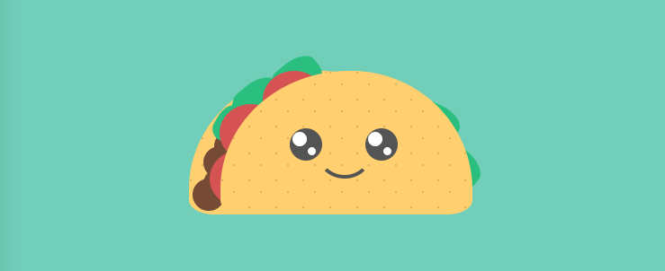

CSS Art Continued
Complete the CSS Art (part 2) (46 mins) tutorial on netnet. In the first "CSS Art" tutorial we created a cartoon sphere out of pure CSS code in order to demonstrate the experimental approach CSS artists apply to their projects. In this tutorial we'll create another sphere, this time with a more three dimensional photo-realistic aesthetic. To achieve this we'll use a few powerful CSS properties and functions which are often used by these artists but rarely used by Web developers, like CSS gradients, transforms and filters.
More CSS Art Tutorials (optional)
Here's a recording (2 hours) from a zoom demo I gave breaking down this CSS art work by Victoria Bergquist, towards the end (after recreating the Taco from the reference piece) I add a little bit of CSS Animations. You can experiment with the completed taco, as well as the taco + face and the animated version on netnet.
In this follow up video (1 hour) I replace those animations with "interactivity" (specifically hover && click). You can experiment with completed sketches on netnet, specifically the CSS hover + CSS click version, the JS hover version and the CSS hover + JS click version.
CSS Art Gallery
I've put together a gallery of some of my favorite CSS Art pieces for inspiration. Click on the image below to explore the full collection.

ASSIGNMENT
CSS Art Experiment
Create a netnet project experimenting with CSS by creating a piece of "CSS Art". While CSS is typically used to change the default styles and layout of content we structure with HTML, for CSS artists the CSS code is the content, and pushing this language to it's creative limits is the focus. I've discussed this perspective and demonstrated many of the techniques employed by these artsits in each of the CSS tutorials we've completed thus far, but for more inspiration take a look at the works I've curated into the CSS Art Gallery linked above.
Make sure to:
- Submit your experiment as a netnet "project" (rather than a "sketch"). Refer to these notes if you've forgotten how.
- Focus on the CSS code, keep HTML to a minimum and avoid using any assets (no JavaScript either). Remember the point of CSS art is experimenting with what you can make using only CSS code.
- Keep your indentation clean. It doesn't have to be exactly the way netnet would do it (although your welcome to use it's
tidyCode()feature), but it should have some rhyme/reason to it.